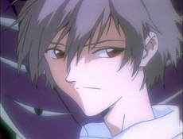
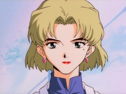
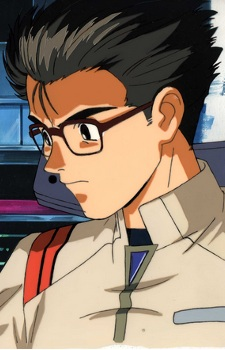
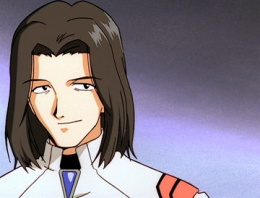
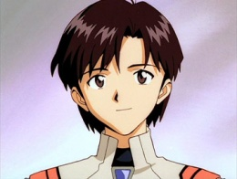
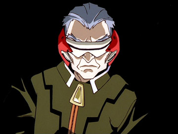
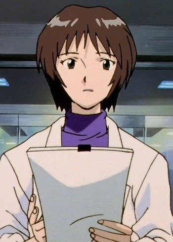

| The End of Evangelion | |
|---|---|

|
|
|
1997 • dur • 87 min |
|
| Direção | Hideaki Anno Kazuya Tsurumaki |
| Produção | Mitsuhisa Ishikawa |
| Roteiro | Hideaki Anno |
| Baseado em | Neon Genesis Evangelion, de Hideaki Anno |
| Elenco | Megumi Ogata Megumi Hayashibara Yūko Miyamura Kotono Mitsuishi Fumihiko Tachiki |
| Gênero | ficção científica |
| Música | Shirō Sagisu |
| Cinematografia | Hisao Shirai |
| Direção de arte | Hiroshi Kato |
| Edição | Sachiko Miki |
| Companhia(s) produtora(s) | Production I.G GAINAX |
| Distribuição |
|
| Lançamento | 19 de julho de 1997 |
| Idioma | japonês |
| Receita | ¥1.45 bilhões[1] |
The End of Evangelion (em japonês: 新世紀エヴァンゲリオン劇場版) "Versão cinematográfica de Neon Genesis Evangelion, o Final de Evangelion: Ar/Meu Coração Puro por Você") é um filme de animação japonês de 1997 escrito e dirigido por Hideaki Anno e produzido pelos estúdios Production I.G e GAINAX. Foi lançado como um final alternativo para a série de televisão Neon Genesis Evangelion.br
É dividido em dois episódios de aproximadamente 45 minutos, com cada episódio tendo títulos alternativos em Inglês, como a série televisiva: "Episódio 25': Air / Love is Destructive" e "Episódio 26': Sincerely Yours / ONE MORE FINAL: I need you.".
| Personagem |
Dublador(a)
Japonês |
|
|---|---|---|

|
Shinji
Ikari
|
Megumi Ogata |

|
Rei
Ayanami
|
Megumi Hayashibara |

|
Asuka
Langley Soryu
|
Yūko Miyamura |
|  | Kaworu Nagisa | Akira Ishida |

|
Misato
Katsuragi
|
Kotono Mitsuishi |

|
Kozo
Fuyutsuki
|
Motomu Kiyokawa |
|  | Ritsuko Akagi | Yuriko Yamaguchi |
|  | Makoto Hyuga | Hiro Yuki |
|  | Shigeru Aoba | Takehito Koyasu |
|  | Maya Ibuki | Miki Nagasawa |
|  | Keel Lorentz | Mugihito |
|  | Yui Ikari | Megumi Hayashibara |

|
Ryoji
Kaji
|
Kōichi Yamadera |
O encerramento ambíguo da série Neon Genesis Evangelion , transmitido entre 1995 e 1996, deixou alguns espectadores e críticos confusos e insatisfeitos.
Os dois últimos episódio foram possivelmente os segmentos mais controversos de uma série já controversa e foi recebido como falha e incompleta por muitos.
O diretor Hideaki Anno recebeu ameaças de morte de alguns fãs insatisfeitos com o encerramento.Porém, Anno e o diretor assistente. Kazuya Tsurumaki, defenderem a integridade artística do final.
Gainax iniciou o projeto para criar um filme como encerramento para a série em 1997, lançando primeiro Death & Rebirth como uma recapitulação baseada nos personagens e re-edição do encerramento da televisão (Death) com a primeira metade do novo encerramento (Rebirth, que era para originalmente ter sido o encerramento completo, mas não pôde ser terminado por causa do orçamento e restrição de tempo). O projeto foi terminado mais tarde no mesmo ano e lançado como The End of Evangelion.
{kind=link}
{kind=link}
{kind=link}
{kind=link}
{kind=link}
{kind=link}
{kind=link}